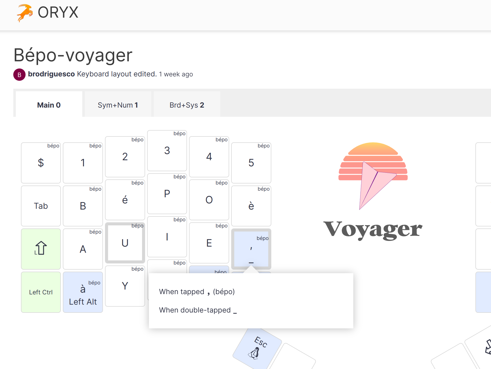
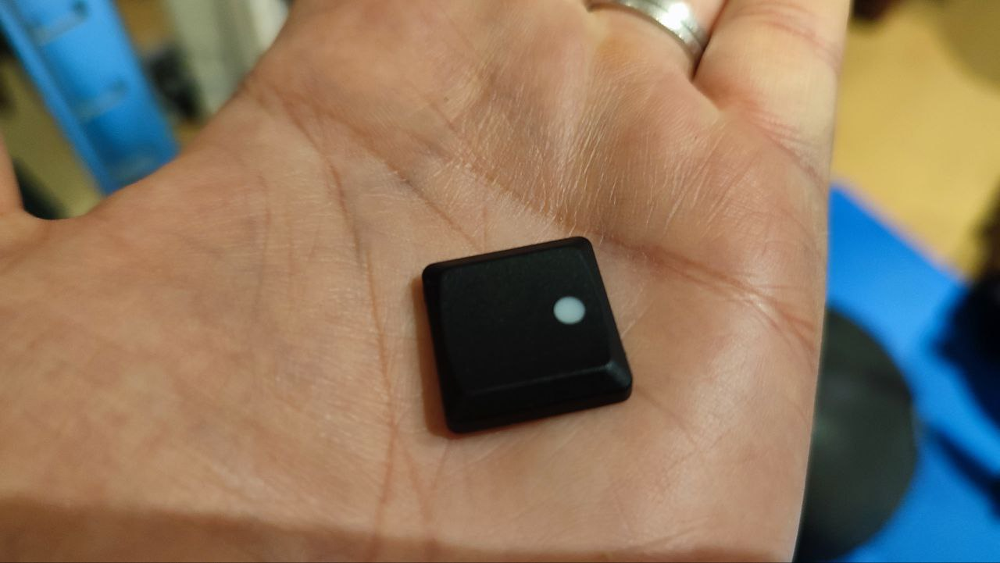
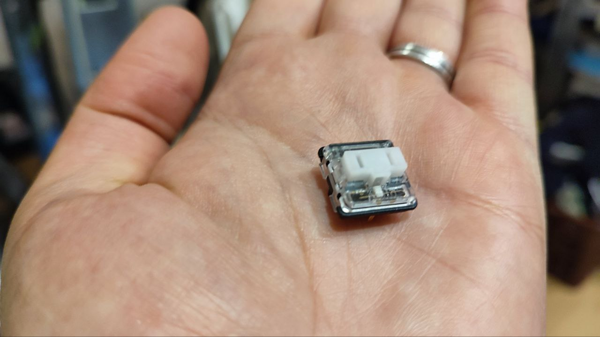
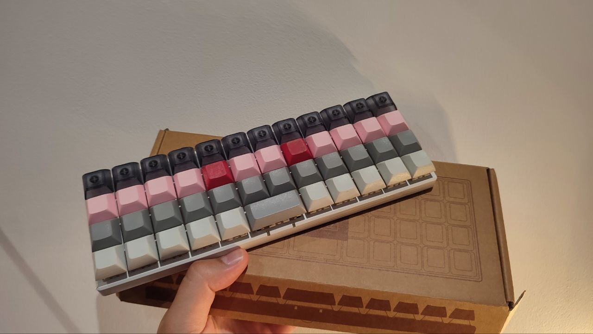
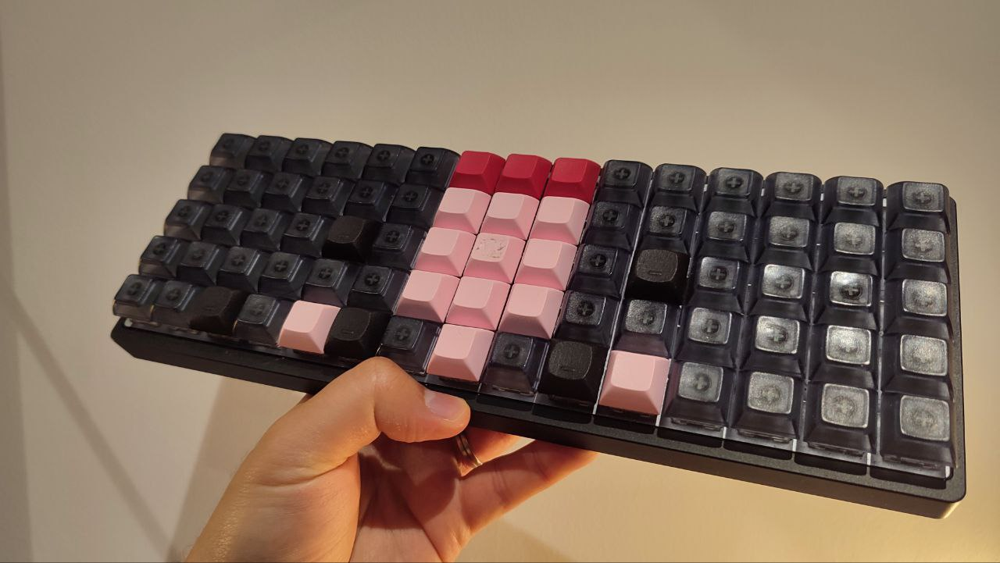
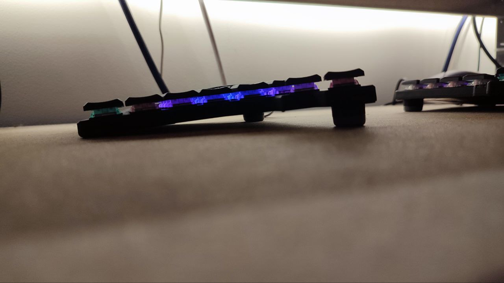
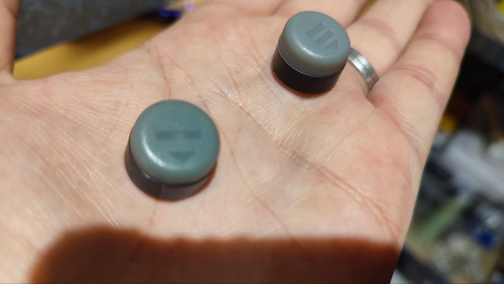
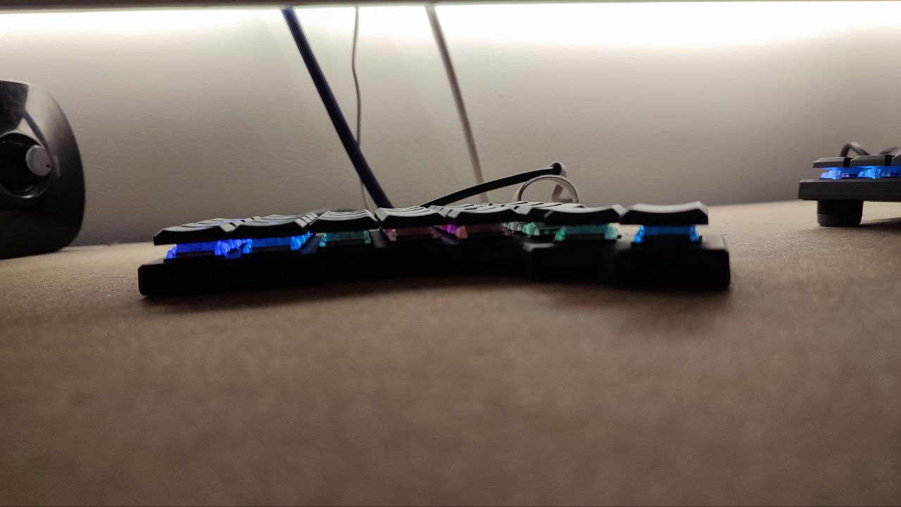
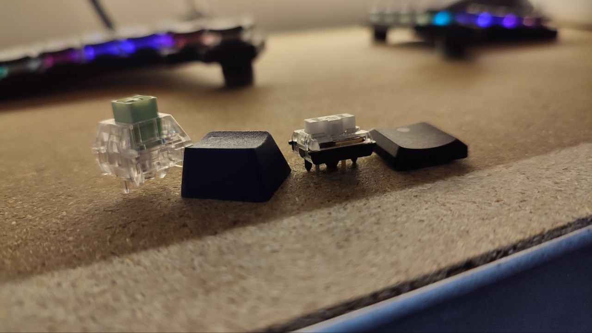

ZSA Voyager review
Now for something completely different than our usual programming: today I’m sharing my thoughts on the latest ZSA mechanical keyboard, the Voyager. First things first: this is in no way shape or form sponsored by ZSA. But Erez, if you’d like to send me money you’re more than welcome.
Here’s what the keyboard looks like:
Yes, it comes with RGB LEDs. Why do mechanical keyboards come with RGB LEDs? No idea, I usually don’t care for them, but unlike other keyboards from ZSA, you cannot order the Voyager without them. So now my keyboard looks like a Christmas tree. And by the way, yes, you can get the good old regular QWERTY layout instead of the dots. I chose to get blank keys because I don’t look at my keyboard when typing.
It’s quite small and there aren’t many keys on it. But it’s very comfortable to use. I’ll try to explain why.
If you don’t know anything about mechanical keyboards, I think you might find this blog post useful. I’ll explain the basics and also why you might want to consider one if you’re a programmer.
First of all, let me just get this out of the way: typing on a mechanical keyboard will not make you type any faster. I think that people that buy mechanical keyboards also tend to be people that spend some time learning how to touch-type, so yeah, they’ll type faster than most people that never bother to learn to touch-type, but two touch-typists, one that use a mechanical keyboard and another that uses a normal keyboard, will roughly type at the same speed.
So if not for speed, why bother with mechanical keyboards?
In my opinion, the main advantage of mechanical keyboards is customization. You can customize absolutely everything: not just how the keyboard looks, but also how it works. Many mechanical keyboards come with a firmware called QMK which enables you to program each key. So for instance I have a key that types “<-” and another that types “%>%”, very useful for an R programmer like myself. You can configure such things at the level of you favourite text editor, but it’s nice to also have the option at the level of the hardware, because it means that you can now easily type these programming symbols anywhere: on social media, an email, a forum… Configuring this firmware on keyboards made by ZSA, like the Voyager, is incredibly easy: there’s a web-application called Oryx that you can use for all they keyboards. Simply select the keys, change what you must and flash the new firmware to your keyboard! For example here, I’m configuring a key to output “,” when pressed, but to output “_” when double-tapped:

And for the flashing process you don’t even have to install anything on your computer: if you’re using a Chromium based browser like Google Chrome, you can flash it from the Web Browser. You can even browse other people’s configurations, for example here’s mine (and you can even customize the RGB).
I use the French ergonomic BÉPO layout, the English equivalent would be Dvorak. You can add different layers, for example by holding one key, all the other keys now output something different when pressed (like holding down the SHIFT key produces capital letters), but you can make any key switch layers and then any other key output anything. For example I have a layer in which I configured keys to move my mouse and click. I don’t use that very often, but in case I forget my mouse if I’m traveling, I could also use my keyboard as a mouse now.
Hardware can also be customized: the color of the keyboard, but also the keycaps (I have the blank ones, as you’ve seen above) and also the switches. If you’re not into mechanical keyboard I guess this doesn’t mean anything. Keycaps are these:

and switches are these:

And you can change either the caps, the switches or both. The keyboard is hot-swapable meaning that you can actually replace the switches. Here is a switch with a keycap on it that I removed from my keyboard:
Again, if you’re not into mechanical keyboard it’s difficult to see why this is really a nice thing: but being able to change caps and switches allows you to truly make the keyboard feel and sound just right for you.
Let me explain: there’s switches that make no sound and that are very easy to press: they’re called linear switches. Then there’s switches that make a nice clicky sound and that require more force to press, and there’s switches that make even more noise and that require a lot of force to press. The harder ones are so-called “clicky” switches and the intermediate ones “tactile”. There’s a lot more subtlety than that, but even I don’t know everything about switches. What matters is that you can swap these, and find the ones that are just right for you. My first mechanical keyboard, also one from ZSA, the Ergodox EZ (pictured below) came with red switches. At the time, I had no idea what switches I should get, so I bought the reds because they were silent, and I figured that I would prefer silent ones. Turns out that I absolutely hated them. It didn’t fill right because they were extremely light, and simply by resting my hands on the keyboard I would press keys by mistake. Then I bought clicky switches, and since then haven’t looked back. Clicky switches make a nice “click” sound when you press them, because there’s actually a little mechanism that produces this noise when you press them. It’s like pushing an actual button. Much more satisfying, and much better, in my opinion, for typing. So for this board I got the white ones, which are the clickiest. It’s also the one’s I had for my other mechanical keyboard, the Planck EZ, also by ZSA:

I also experimented with heavier ones on my other board (an Idobao ID75, a somewhat overgrown Planck, not by ZSA but also very customizable through VIAL):

The switches there are heavier, and I enjoy them a lot as well.
Now, this keyboard isn’t cheap, but it does come with a lot of nice stuff in the box. You get 3 usb cables, 4 more switches, several keycaps more, and a carrying bag.
And as you can see, it’s a so-called low profile keyboard:

You can even remove these little feet from the keyboard (they’re magnetic):

to get it even lower:

I’ve never had such a keyboard in the past and I must say that it’s really comfortable to use. I don’t need to use any wrist rests anymore, which is kinda nice. Because it’s low-profile the switches and keycaps are different from the usual ones you get for other mechanical keyboards:

Anyways, I really enjoy this form factor, not just that it’s low profile, but also that it doesn’t have a lot of keys. I like this, because my hands don’t need to move at all. If I need numbers for example, I switch layers, and now the keys that would usually be directly under my fingers will output numbers when pressed. So instead of my fingers going to the keys, they keys go to my fingers. It gets some time to get used to this, but once you know how to do that, it’s just great.
So, should you buy a Voyager? I might not advise it to you for a first mechanical keyboard. There’s much cheaper ones that you can get and see if mechanical keyboards are for you. If you can, try some out in a store, I think it’s especially important to find the right switches for your style. As I’ve written above, I started with linear reds which I hated, thankfully I tried clicky whites before abandoning my mechanical keyboard adventure. If you’re already a hardened mechanical keyboard user, and are looking for a light keyboard that you can take with you on your travels, I think that it’s hard to overlook the Voyager. There are other nice, very transportable keyboards out there, but the build quality of ZSA and the firmware customization tool they provide, Oryx, is hard to beat.